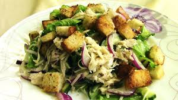

Салат "Хрустящий"
Очень вкусный салат. Легкий, но в то же время сытный. Сыр желательно использовать твердый, в идеале — Пармезан. Вместо куриного филе можно использовать филе индейки. Рекомендую сухарики добавлять перед подачей на стол, для того, чтобы они оставались хрустящими. Из указанного количества ингредиентов получается 6–8 порций.
Ингридиенты:

200 г белого батона
250 г куриного филе
150 г сыра
300 г огурцов
150 г лука
1 пучок зеленого салата
4 ст.л. растительного масла
3 зубчика чеснока
1 ст.л. уксуса 6%
соль
перец
Приготовление
Филе отварить до готовности (варить около 20 минут после закипания).
Остудить.
Разобрать филе на волокна.
Батон нарезать кубиками.
Обжарить на растительном масле до золотистого цвета.
Огурцы нарезать соломкой.
Лук нарезать полукольцами.
Если Вы используете горький лук, его надо залить кипятком, оставить на 10 минут, затем воду слить, лук промыть в холодной воде.
Сыр натереть на мелкой терке.
Сделать заправку.
Для этого смешать растительное масло, уксус, соль, перец, выдавленный через чеснокодавку чеснок.
Салат порвать руками.
Добавить огурцы, лук, филе, сыр, заправку и сухарики.